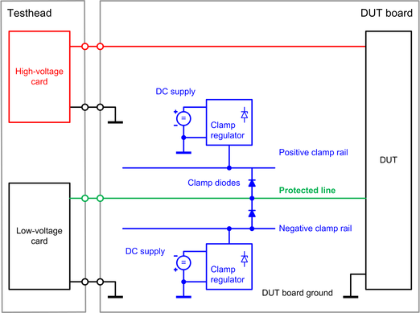

HV (High-Voltage) protection
High-voltage (HV) test head cards, like the "DC Scale AVI64" for example, provide enough energy to damage low-voltage cards if both are connected via defective DUTs or unintentionally closed connections. Therefore, the low-voltage cards must be protected. This will improve the up-time of the test system and the throughput of high-voltage applications.
This guideline shows how to implement protection circuitry on the DUT board. The circuitry prevents low-voltage cards from being damaged by short high-voltage pulses that may occur in production mode. A more complex solution is required for static debugging conditions.
Root causes for HV damage
There are two main situations in which high-voltage test head cards damage low-voltage cards:
- A defective DUT may connect high-voltage input pins to pins, where low-voltage cards are connected.
- Unintentionally closed connections can connect high-voltage pins directly to pins of low-voltage cards.
Details are available in HV protection - Root causes for high-voltage damages.
HV test head cards and cards that need protection
Three kinds of test head cards work together in HV applications:
- High-voltage cards that may damage other cards.
- Low-voltage cards that may be damaged by high-voltage cards.
- High-voltage cards that may be damaged by other high-voltage cards.
All test head cards provide basic protection against electrostatic discharge (ESD) but require additional protection against unintentionally applied pulses of high-voltage cards. The protection is required in case a high-voltage card is set to a voltage that exceeds the maximum external input voltage (compliance range) of the low-voltage cards. The protection is additionally required for high-voltage cards if different types of high-voltage cards with incompatible operating and compliance ranges are combined in one application.
For more information refer to HV protection - Compliance range.
Solution for low-voltage cards
The proposed high-voltage protection consists of three major components, which are marked blue in the diagram below:
- The clamp diodes discharge high-voltage pulses to the clamp rails and provide the required isolation for low voltages. For each protected line, there is one diode for the positive clamp rail and one diode for the negative clamp rail. The voltages of the clamp rails depend on the operating voltage range and the compliance voltage range of the low-voltage test head cards as shown in HV protection - Compliance range.
- The clamp regulators keep the voltages of the clamp rails at the specified levels. They behave basically like zener diodes but use a more complex circuit to minimize the reaction time and to maximize the stability. A small bias current for the clamp diodes must be provided, and the regulators must be able to absorb the energy of the high-voltage pulses. One regulator is required per clamp rail.
- A DC supply is used to supply the clamp regulators. The number of required DC supplies depends on the power output of the supplies. The normal case will be that one DC supply is used for all positive clamp voltage regulators and one for all negative clamp voltage regulators.

- Recommended DUT board hardware
- We recommend that you implement the circuitry described in HV protection - Recommended protection circuitry on your DUT boards to protect the low-voltage cards.
- Impact on stimulations and measurements
- Any protection circuitry will affect stimulations and measurements. Details are described in HV protection - Impact on stimulations and measurements.
Solution for high-voltage cards
To protect an AVI64 card from being damaged by another high-voltage card like the FVI16, we recommend using the protection circuitry as shown in AVI64 HV (High-Voltage) protection for the AVI64 channels.
Functional changes
- Introduced in SmarTest 7.3.1 / 8.1.0